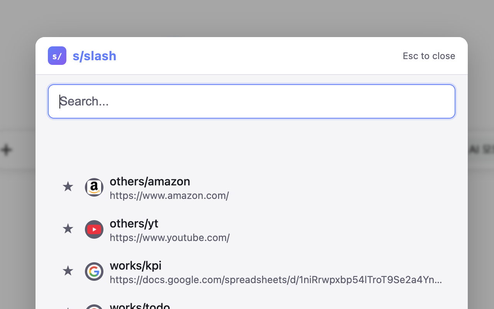
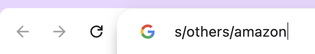

Type s/work/docs in the address bar and land on the bookmark. Fuzzy search, URL templates, and an overlay that works on any page.
주소창에 s/work/docs 를 치면 바로 그 북마크로 가요. 퍼지 검색, URL 템플릿, 어떤 페이지에서나 열리는 오버레이까지.


The overlay reopens empty, the desktop app starts fast, and bookmarks resolve even when Chrome keeps them in your Google account. 오버레이가 늘 빈 상태로 열리고, 데스크톱 앱은 빠르게 뜨고, Google 계정에 저장된 북마크까지 제대로 찾아가요.
The overlay is hidden rather than destroyed, so a query you had already opened or dismissed was still sitting in the box next time. Closing it now clears the search, the variable chips and the selection, whichever way you close it.
오버레이는 닫히는 게 아니라 숨겨지기 때문에, 이미 열었거나 취소한 검색어가 다음에 그대로 남아 있었어요. 이제 어떤 방법으로 닫아도 검색어와 변수 칩, 선택 상태까지 같이 비워요.
The desktop app scanned every extension's database to find its own. It now reads only where its marker can be, and caches the result until Chrome writes again.
자기 저장소를 찾으려고 모든 확장의 DB 를 뒤지던 동작을 없앴어요. 마커가 있을 수 있는 곳만 읽고, Chrome 이 다시 쓸 때까지 캐시해요.
Entering variable mode re-read the history store every time and resized the window three round trips late. Both are gone.
변수 모드에 들어갈 때마다 히스토리 저장소를 다시 읽던 것도, 창 크기 변경이 IPC 왕복 3번 뒤에야 적용되던 것도 함께 고쳤어요.
Signed into Chrome, your bookmarks may live in the account store rather than the local one. Desktop and CLI now read both and merge them the way Chrome shows them.
Chrome 에 로그인하면 북마크가 로컬이 아닌 계정 저장소에 들어가요. 데스크톱과 CLI 가 두 저장소를 모두 읽어 Chrome 과 똑같이 합쳐서 보여줘요.
Each {0} becomes its own field in the overlay, popup, and desktop. Values with spaces need no quoting; move between them with Tab.
오버레이·팝업·데스크톱에서 {0} 마다 입력 칩이 따로 생겨요. 공백이 있어도 따옴표 없이 적고, 이동은 Tab 으로 해요.
Give a template a fallback so the bare path still opens something sensible when you pass no value.
값 없이 경로만 입력해도 의미 있는 곳이 열리도록, 템플릿마다 기본값을 정해 둘 수 있어요.
The desktop app checks for updates on launch and from Settings, installs the signed build, and relaunches itself.
실행할 때와 설정에서 업데이트를 확인하고, 서명된 빌드를 설치한 뒤 알아서 다시 시작해요.
Everything else is optional. Desktop and CLI read the same bookmarks and the same settings. 나머지는 전부 선택이에요. 데스크톱과 CLI 는 같은 북마크와 같은 설정을 읽어요.
The core of Slash: search, templates, favorites, and the overlay. Slash 의 핵심: 검색, 템플릿, 즐겨찾기, 오버레이
Name the path, get the page. Everything here exists to keep that gesture short. 경로를 말하면 페이지가 열려요. 모든 기능은 그 동작을 짧게 유지하려고 있어요.
Letters can skip. wd finds work/docs, and the closest match sorts first.
글자를 건너뛰어도 돼요. wd 로 work/docs 를 찾고, 가장 가까운 결과가 맨 위로 와요.
Where you already are. Type s, a space, then the path. No menu, no new tab to get there.
이미 손이 가 있는 곳이에요. s, 공백, 경로 순으로 치면 끝이라 메뉴도 새 탭도 필요 없어요.
Store {0} in a bookmark and pass values from the bar, the overlay, or the CLI. Tab opens a live preview.
북마크에 {0} 을 넣고 주소창·오버레이·CLI 에서 값을 넘기세요. Tab 을 누르면 라이브 미리보기가 열려요.
Pick any folder as the root. Paths mirror your bookmark tree, so there is nothing new to learn.
어떤 폴더든 루트로 지정할 수 있어요. 경로가 북마크 트리 그대로라 새로 외울 것이 없어요.
Browser, desktop, and CLI read the same bookmarks and the same settings. Change the root once.
브라우저·데스크톱·CLI 가 같은 북마크와 설정을 써요. 루트는 한 번만 바꾸면 돼요.
No account, no sync service, no analytics. Slash reads the bookmark store already on your machine.
계정도, 동기화 서버도, 분석 도구도 없어요. 이미 기기에 있는 북마크 저장소를 읽을 뿐이에요.
Bookmarks and storage, nothing more. The privacy policy lists every permission and why it is there.
북마크와 저장소 권한만 써요. 모든 권한과 그 이유는 개인정보 처리방침에 적어 두었어요.
English and Korean across every surface, picked up from one setting in the extension.
확장에서 한 번만 고르면 모든 지면에 영어·한국어가 함께 적용돼요.
Reach the same bookmarks with the browser closed, or from a script. 브라우저를 닫아 둔 채로도, 스크립트 안에서도 같은 북마크에 닿아요.
A global shortcut that works with Chrome closed, on macOS and Windows. Lives in the menu bar, launches at login, and updates itself.
Chrome 이 꺼져 있어도 전역 단축키가 동작해요. macOS·Windows 를 지원하고, 메뉴 막대에 머물면서 로그인할 때 실행되고 스스로 업데이트해요.
curl -fsSL https://ytw0728.github.io/docs/slash/install.desktop.mac.sh | bash
irm https://ytw0728.github.io/docs/slash/install.desktop.win.ps1 | iex
One binary and no config file. It reads Chrome's bookmarks and the extension's settings directly, so you can open a path from a shell, a script, or an alias.
설정 파일 없는 단일 바이너리예요. Chrome 북마크와 확장 설정을 직접 읽어서, 셸·스크립트·알리아스 어디서든 경로를 열어요.
curl -fsSL https://ytw0728.github.io/docs/slash/install.mac.sh | bash
irm https://ytw0728.github.io/docs/slash/install.win.ps1 | iex
Add desktop or CLI later. They pick up the settings you already made. 데스크톱과 CLI 는 나중에 더해도 돼요. 이미 해 둔 설정을 그대로 읽어요.
Install Chrome Extension Chrome 확장 설치